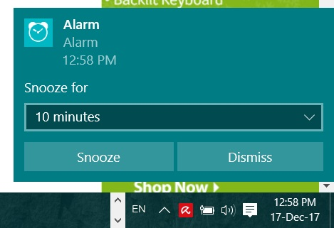

ອາການຕີດ blue screen of death ຫຼື BSOD ທີ່ເປັນບັນຫາປວດຫົວ ບາງຄັ້ງບໍ່ໄດ້ເປັນຕາຢ້ານຢາງທີ່ຄິດ ພຽງແຕ່ເຮາສາມາດກວດເຊັກແລະເຂົ້າໃຈບັນຫາທີ່ເກີດຂື້ນໄດ້ ໂດຍການສັງເກດຈາກລະຫັດເວລາທີ່ເກີດ BSOD ຂື້ນມາ ໂດຍມັກຈະບອກເປັນລະຫັດ ໃຫ້ເຮົາເຊັກໄດ້ວ່າເກີດຈາກສາເຫດໃດ ແຕ່ບັນຫາທີ່ເຮົາມັກຈະພົບເຫັນກໍ່ຄື ລະບົບຣີສະຕາດຫຼັງຈາກທີ່ເກີດບູສະກີນບໍ່ດົນ ເຮັດໃຫ້ບໍ່ທັນເຫັນລະຫັດບັນຫາທີ່ເກີດຂື້ນ ເຮັດໃຫ້ການແກ້ໄຂເຮັດໄດ້ຍາກ

ໂດຍປົກກະຕິເຮົາມັກຈະເພິ່ງພາໂທລະສັບມືຖືທີ່ຈະຊ່ວຍປຸກທ່ານໃນຕອນເຊົ້າ ຫຼືບາງທີຕັ້ງເວລາໃນບາງຊ່ວງການເຮັດວຽກ ເຊັ່ນ ອາດຈະພັກຜ່ອນໃນຊ່ວງເວລາກາງເວັນຫຼືຕັ້ງເວລາໃນການໃຊ້ງານອື່ນໆ ໄດ້ເຊັ່ນດຽວກັບມືຖື ພຽງແຕ່ມີພີຊີຫຼືໂນດບຸກ window 10 ເທົ່ານັ້ນ ວິທີການຄ່ອນຂ້າງງ່າຍໃນການຕັ້ງໂມງປຸກໃນພີຊິຫຼືໂນດບຸກ window 10 ມີເງື່ອນໄຂພຽງຢ່າງດຽວຄື ລະບົບຈະ alert ເມື່ອຄອມຂອງທ່ານຍັງເຮັດວຽກຢູ່ເທົ່ານັ້ນ ຫາກຢູ່ໃນໂໝດ sleep ຫຼື hibernate ຈະບໍ່ມີການເຕືອນເກີດຂື້ນ ສະນັ້ນເວລາທີ່ທ່ານຈະໃຊ້ງານອາດຈະຕ້ອງເຂົ້າສູ່ໂໝດດັ່ງກ່າວນີ້ກ່ອນ ງ່າຍໆເລຍກໍ່ຄືເຂົ້າໄປຕັ້ງ power management ແລະປິດການຕັ້ງເວລາ sleep ຫຼັງຈາກທີ່ລະບົບຢຸດນິ້ງເປັນເວລາດົນ ການຕັ້ງໂມງປຸກ ຫຼື alarm ເທິງ window 10 ສາມາດເຮັດໄດ້ໂດຍ